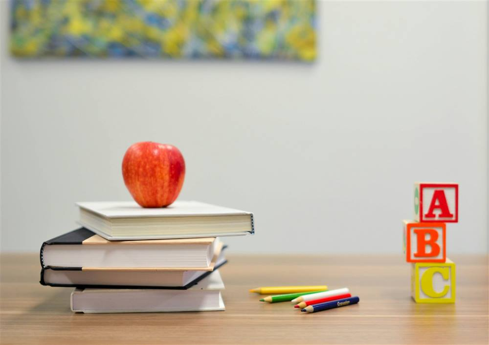

Jenjang SD
Fondasi belajar yang tenang: membaca, menulis, berhitung, dan kebiasaan belajar yang baik.
Lihat jenjang SDYayasan pendidikan SD dan SMP
Kenali Yayasan Umik Sopiah, jenjang SD dan SMP, serta informasi pendaftaran untuk putra-putri Bapak/Ibu.
Jenjang

Fondasi belajar yang tenang: membaca, menulis, berhitung, dan kebiasaan belajar yang baik.
Lihat jenjang SDPendampingan untuk belajar lebih mandiri, berpikir runtut, dan siap melangkah ke jenjang berikutnya.
Lihat jenjang SMPPendekatan kami
Suasana belajar yang ramah bagi anak dan nyaman bagi keluarga.
Informasi sekolah disampaikan sederhana, supaya Bapak/Ibu mudah memahami pilihan.
Setiap anak belajar dengan kecepatannya, satu langkah pada satu waktu.
Penerimaan Peserta Didik Baru (PPDB)
Baca profil dan jenjang yang sesuai untuk putra-putri Bapak/Ibu.
Tanyakan hal yang ingin diketahui lewat WhatsApp.
Isi formulir dengan data calon murid dan orang tua atau wali.
Kami menghubungi Bapak/Ibu untuk langkah selanjutnya.
Pertanyaan umum
PPDB adalah Penerimaan Peserta Didik Baru, yaitu proses pendaftaran calon murid untuk jenjang SD atau SMP.
Yayasan Umik Sopiah mengelola sekolah jenjang SD dan SMP.
Bapak/Ibu dapat menghubungi kami lewat WhatsApp atau mengisi formulir di halaman Kontak.
Informasi biaya dan jadwal disampaikan langsung oleh yayasan lewat WhatsApp, agar selalu sesuai ketentuan terbaru.
Kami siap membantu Bapak/Ibu memahami pilihan sekolah.